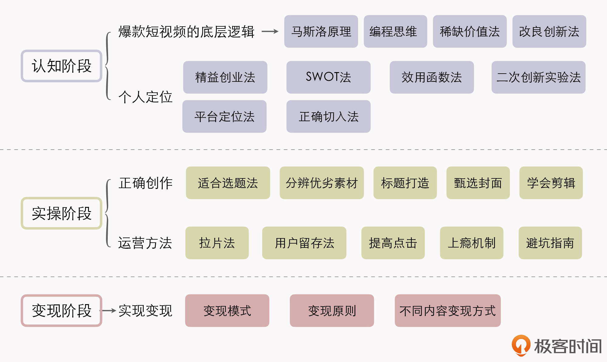
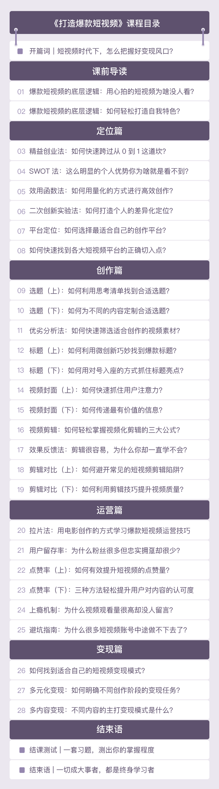

- 00 开篇词 短视频时代下，怎么把握好变现风口？.md.html
- 01 爆款短视频的底层逻辑：用心拍的短视频为啥没人看？.md.html
- 02 爆款短视频的底层逻辑：如何轻松打造自我特色？.md.html
- 03 精益创业法：如何快速跨过从0到1这道坎？.md.html
- 04 SWOT法：这么明显的个人优势你为啥就是看不到？.md.html
- 05 效用函数法：如何用量化的方式进行高效创作？.md.html
- 06 二次创新实验法：如何打造个人的差异化定位？.md.html
- 07 平台定位：如何选择最适合自己的创作平台？.md.html
- 08 如何快速找到各大短视频平台的正确切入点？.md.html
- 09 选题（上）：如何利用思考清单找到合适选题？.md.html
- 10 选题（下）：如何为不同的内容定制合适选题？.md.html
- 11 优劣分析法：如何快速筛选适合创作的视频素材？.md.html
- 12 标题（上）：如何利用微创新巧妙找到爆款标题？.md.html
- 13 标题（下）：如何用对号入座的方式抓住标题亮点？.md.html
- 14 视频封面（上）：如何快速抓住用户注意力？.md.html
- 15 视频封面（下）：如何传递最有价值的信息？.md.html
- 16 视频剪辑：如何轻松掌握视频化剪辑的三大公式？.md.html
- 17 效果反馈法：剪辑很容易，为什么你却一直学不会？.md.html
- 18 剪辑对比（上）：如何避开常见的短视频剪辑陷阱？.md.html
- 19 剪辑对比（下）：如何利用剪辑技巧提升视频质量？.md.html
- 20 拉片法：用电影创作的方式学习爆款短视频运营技巧.md.html
- 21 用户留存率：为什么粉丝很多但忠实拥趸却很少？.md.html
- 22 点赞率（上）：如何有效提升短视频的点赞量？.md.html
- 23 点赞率（下）：三种方法轻松提升用户对内容的认可度.md.html
- 24 上瘾机制：为什么视频观看量很高却没人留言？.md.html
- 25 避坑指南：为什么很多短视频账号中途做不下去了？.md.html
- 26 如何找到适合自己的短视频变现模式？.md.html
- 27 多元化变现：如何明确不同创作阶段的变现任务？.md.html
- 28 多内容变现：不同内容的主打变现模式是什么？.md.html
- 结束语 一切成大事者，都是终身学习者.md.html
- 捐赠
00 开篇词 短视频时代下，怎么把握好变现风口？
你好，我是周维，前快手市场总监，图书《爆款短视频》作者，目前是一名短视频知识分享者。
2015年，我正在如日中天的乐视做市场品牌工作，当时的快手远没有像如今名声在外、规模巨大，但我毅然选择跳槽到快手。因为我看见智能手机的全面普及，Wi-Fi和4G的落地，隐隐觉得短视频的浪潮即将兴起。
而且，我还一直抱着一种理念：人与人之间的差距，很多时候只在一念之差，有人选择停留当下，有人则勇敢追随时代的步伐，而我喜欢顺势而为，并在这个过程当中去寻找自我价值。
那么，站在现在回顾过去，毫无疑问，我的选择是正确的，短视频时代果真到来了。
我在短视频领域深耕了6年，可以说，每一天我都在和短视频打交道。在快手时，我带领团队引入了各行各业的短视频创作者，亲眼见证了无数像你我一样的普通人借助短视频改变了人生轨迹。我越来越坚信，短视频已经融入到我们每个人的生活当中，这也为视频创作者提供了巨大的机遇，甚至可以说，它成为了我们每个人的必备技能。
拍短视频可以给我们带来什么？
一说起拍短视频的好处，我总是会想起我见证过的千千万万的小故事。故事的主角全部都是像你我一样的普通人，但是他们通过拍摄短视频，最终在人群中闪闪发亮。
1.会拍短视频，是你职业发展的加分项。
曾经，我在一个短视频创作者会议上认识了一位某互联网公司的工程师。看他的作品，我还以为他是职业摄影师。他告诉我说，他并不是很喜欢写代码，也不想总是加班加点儿地工作。他一直很喜欢摄影，但是却苦于没有渠道展示自己。
短视频兴起后，他开始尝试在业余时间拍摄自己喜欢的题材，很快就积累了数万粉丝。同时，他从一名默默无闻的小员工变成了公司的“御用摄影师”，开始为公司策划、拍摄各种宣传视频，本职收入也实现了翻倍增长。
这绝对不是个例。
现在，实体店的售卖、企事业单位的宣传，都从线下转到了线上，各行各业都已经融入到视频化的大潮之中，短视频创作也成为了不可或缺的一种职业技能。越早掌握这项技能，越能尽快脱颖而出，不仅可以实现在公司内部的升职加薪，同时还可以把爱好变成副业，一生和喜欢的事情在一起。
2.短视频变现，比你想象的还要简单。
短视频变现，是这个时代非常普遍的获得收益的方式。虽说“某某网红月入数十万”的新闻距离我们太过于遥远，但是通过短视频增加收入，绝对比你想象的要容易。
我之前公司的一个同事平时很喜欢旅行，每个假期都会出门游山玩水，并且通过短视频的方式记录下来。随着慢慢耕耘，他发现自己的账号有了流量收入，还有一些设备厂商找他做广告。这些收入就像越积越多的米粒一样，让他实现了财富的快速增长。
类似的案例有很多很多，它们都在告诉我们，短视频变现，绝非难事。
其实，在很多视频平台上，只要你发布的视频浏览量超过了一定的数字，你都可以收到一定的奖励金。当你的粉丝数积累到一定程度时，就会有广告商来找你，一条广告的费用可能是你好几个月的工资。
不是只有每天996，才能有可观的收入，短视频时代给我们提供了很好的发展机会，千万别局限住自己。
3.把生活拍下来，留住记忆。
在我看来，拍短视频最迷人的一点，就是可以记录生活。每个人都会匆匆老去，一瞬间，父母长了白发，孩子长大，我们需要把日常生活记下来，不是粗糙地记下来，而是让每个片刻都因为我们的独特思考，永远留存在记忆里。
说到这儿，我还想再给你分享一个小故事。
几年前，有个用户给我们公司的公共邮箱发邮件，恰好被我看到了，邮件大概的意思是她的账号无法登录了。问题挺简单，我就让开发同事帮忙解决了，这个事情也就这么过去了。
但是没多久，我们收到了她寄来的一封感谢信和一些特产。我当时有点摸不着头脑：一个账号而已，就算挂了再重新注册也是很快的，至于这么重视吗？
不过，当我看完信里的内容、翻看她的账号时，才发现这位用户是一位年轻妈妈，她发布了近千条短视频，全都是自己宝宝的成长记录。她在信里说：“从宝宝出生，我就在记录他的成长，如今宝宝三岁了，我也通过短视频记录了三年，我希望继续记录下去，等到他长大后给孩子看，这将成为我能给予孩子的最好的礼物。”
那一刻，我有些泪目。一条条简短的，甚至创作手法略显拙劣的视频，就是一位母亲送给孩子最好的成长礼物。所以，有句话是这样说的：“日子被记录，日子才靠得住。”用形式的永恒去克服岁月的流逝，这就是拍短视频的意义和价值。
总而言之，无论你是希望摆脱日复一日为了生计疲于奔命的状态，还是希望你的人生里多一种选择、多点记录，拍短视频这件事儿，都可以帮你实现。
怎么持续产出高质量的短视频？
现在短视频的创作门槛越来越低，似乎每个人只要拿起手机就可以拍出一段短视频。拍短视频一夜爆火的现象当然有，但这只是个例。想要持续产出高质量的短视频，并不容易。
我认为这背后的原理是，当技术与工具不再成为短视频入局的门槛时，大家比拼的往往是高效、正确的创作方法，以及持续的自我学习能力。
如果你之前有过短视频创作的经历，我猜你肯定也遇到过以下这些问题：
- 怀抱满腔的热情投入到短视频创作中，却不知道从哪里下手；
- 刚了解了一点，发现都是零碎的知识点，根本成不了体系，做了第一步，不知道第二步该如何办；
- 看了那么多短视频，感觉很容易，自己肯定要比别人强，而当真正踏入到创作这个阶段时，就发现完全是另外一回事，而且根本不知道问题在哪里。
其实会遇到这些问题也并不奇怪，这应该是很多短视频创作者的通病。
跟短视频打交道这么多年，我见过太多颜值不错、能力很强，也有很好的知识背景的人，做事非常努力，但是唯独在短视频这一块，总是无法达成自己期望的目标值。
我认为，之所以会出现这种情况，归根结底是因为他们没有掌握短视频创作的底层能力。
实际上，短视频创作并不像编程、算法这种硬核的专业技术知识，有科班教育和系统全面的课程帮我们从0开始掌握一门技能。短视频创作中的很多方法都是零散的、不统一的，需要经过总结和梳理，沉淀出一套系统的方法论，这样才能帮助我们修炼好内功，夯实知识的根基，提升短视频创作能力。
而要想总结出这套方法论，也没有那么轻松，你需要从头开始去实践、复盘、沉淀，投入很多的时间和精力，甚至可能需要踩很多的坑，才能摸索出一套短视频创作方法论，而这还很有可能是错误的，或者是过时的。
为了避免这个问题，我将过去6年来在短视频行业中总结的实践经验与创作方法，进行了沉淀与升级，准备在这个课程里全部分享给你。我会深入解读短视频创作的底层逻辑和方法技巧，并融合众多真实的平台案例，帮你突破短视频创作瓶颈，让你能在创作的同时具备学习的能力，真正利用切实可行的方法论去解决遇到的实际难题。而且，这种学习方法会让你具备举一反三的解决问题的能力。
我是如何规划课程的？
学习拍摄短视频绝对不是一蹴而就的事情，我们需要对平台、对自己建立起正确的认知，掌握拍摄、剪辑等技巧，同时学会运营和变现。根据我多年的创作经验，我把这个学习过程分为三个阶段，分别是认知阶段、实操阶段和变现阶段，如下图所示：

这三个学习阶段是从0到1、由浅到深地掌握短视频创作能力的关键，不可偏废。根据这个思路，我将课程主体划分为五个模块。
导读篇：我会带你梳理清楚那些热门短视频爆火背后的底层逻辑，并结合快手、抖音等平台上一些你耳熟能详的案例，让你掌握短视频创作的精髓，能够分辨出一条内容成为爆款需要具备的关键因素，拥有一双识别爆款短视频的“火眼金睛”，为后面的知识学习打好根基。
定位篇：认清定位，对于短视频创作者来说非常关键，这能帮你找准正确的创作之路。因此在这个模块中，我会从个人、平台、内容、阶段等不同的维度切入，涵盖最常用的定位方法，并针对不同的定位方法，配合实际创作时会遇到的问题案例进行详细讲解。同时，为了便于你理解、把握每一种定位方法，我还会总结一些注意事项、避坑指南，帮你更加精准地掌握知识重点。
创作篇：这个模块中，我会具体剖析如何选题、如何筛选素材、如何起标题、如何做封面、如何剪辑等重点内容，并且每一部分我都会采用可实操的方法、可参考的案例，从浅到深一步步带你理解和掌握。在此过程中，我相信你会获得一个全新的看待问题的视角，也能够形成正确的短视频创作习惯。
运营篇：我会站在短视频运营的角度，为你详细阐述提高短视频各项数据指标的有效手段。同时，我还会根据多年的踩坑经验，告诉你怎样做是正确的、为什么这样做是正确的方法，让你在运营中少走一些弯路。
变现篇：俗话说授人以鱼，不如授人以渔。因此，在最后一个模块，我不会只列举短视频变现的种类，相反，我会给你讲解可执行的方法，帮你找到适合自身的变现模式，以此把握真正的赚钱之道。另外，为了防止你在变现之路上“误入歧途”，我还会针对不同的创作阶段，通过案例与总结方法的形式，让你了解什么样的变现模式需要牢牢把握，而什么样的变现模式需要缓一缓，不能着急。

总之，在课程中，我不仅会给你讲解各种拍摄难题，还会用最容易理解的方式教会你剪辑技巧。同时，我会结合大量真实的案例，展示热门视频的套路，以及初学者最容易踩的坑。
最重要的是，你要跟着我的讲解进行实操，千万不要停留在理解阶段。
抓住机会吧，短视频时代已经到来！
可以说，视频将会是未来新一代的信息革命，而由视频构建的内容生态已经开启了全新的社会协同方式，并且这种社会协同带来的价值正在影响我们每一个人。下一个十年，我们将通过视频的方式和世界建立连接，而短视频就是打开这扇大门的钥匙。
所以我希望，这个课程也能成为你连接未来的一个窗口，或者是成为你人生的转折点。
我最大的愿望，就是你通过学习这个课程，能够掌握一种学习知识的全新方法，并且借用视频化的思维和视角来提高自己的认知。当然，我更希望能帮助你在短视频的创作上跨越从0到1的这个坎，去实现自己人生的最大价值，在职场中收获最大的回报。
最后，如果你在学习课程和创作短视频的过程中遇到了什么问题，非常欢迎你给我留言，我都会认真给予解答。同时，如果你身边也有喜欢短视频创作的朋友，也可以邀请他们一起学习，彼此监督、鼓励，我相信，只有在互帮互助的学习氛围内，才能提高自己的学习能力。
从现在起，让我们一起加油吧！
© 2019 - 2023 Liangliang Lee. Powered by gin and hexo-theme-book.